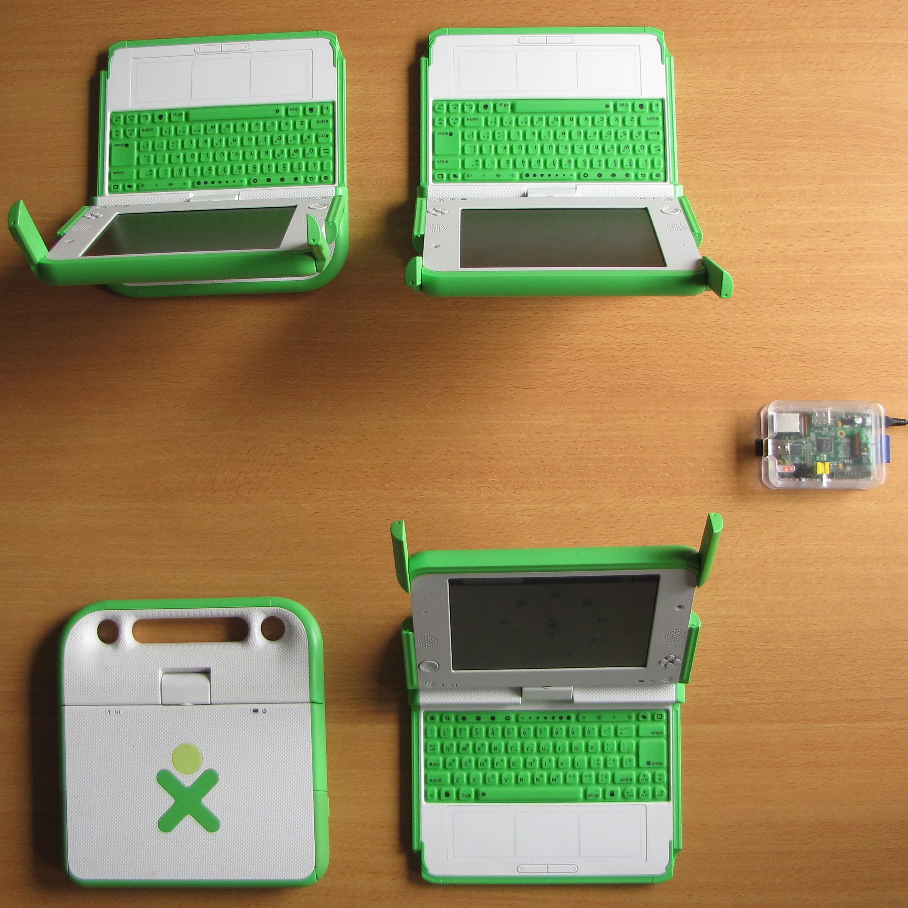
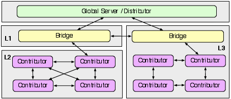

The need for sharing structured data
As more and more applications are data-driven, being able to share semi-structured data seamlessly becomes an absolute necessity. Building social networking applications or semantic wikis, for instance, relies today mostly on the capability to share, integrate and redistribute heterogeneous pieces of data across large sets of users. Supporting semi-structured data sharing is especially crucial in a learning context, where students are often expected to contribute highly-structured content (e.g., scientific reports, quizz answers) that is then compared, merged or integrated. However, most of today’s open data sharing infrastructures strongly rely on the availability of third-party online resources (such as DBpedia http://dbpedia.org/) that are not always available in rural or remote contexts. Our project will help teachers and students in two specific ways: i) we will build an open software infrastructure to more easily share and integrate semi-structured data locally in ad-hoc contexts and ii) we will build mechanisms to then seamlessly integrate the contributed data into global data sharing platforms.
Entity Registry System (ERS) as a solution
An entity registry is a software that associates data to a uniquely identified entity. For instance, the DNS registry associates a list of IPs to the uniquely identified site “wordpress.com”. In contrary to standard registries that are centralised and read-mostly, ERS is an innovative registry which is designed to be read/write, track the provenance of the contributions and be usable offline and online. This registry creates a global data space where every user is able to say something about any entity. Just like Wikis allows for the collaborative of a web site, ERS will enable the collaborative editing of a registry on a de-centralised basis. The data associated to en entity is its description, recorded as RDF data. By using this open standard, ERS benefits from an open and supported stack of protocols and can also easily interact with other data sets published under the same standards.
ERS is designed around three type of components:
- Contributor: Contributors read and edit the content of the registry. They may create and delete entities, look for entities, and contribute to the description of entities. Every contribution is identified by the contributor name so that the collectively-created description of an entity can be traced back to individual contributors. Contributors are free to make any statement about any entity in the system. They use a local data-store in which they persist their contributions to the description of the entities. They may also cache the contributions of others when appropriate.
- Bridge: Bridges do not directly contribute to the content of the registry. They are used to connect isolated closed networks and improve the availability of the individual descriptions shared by the contributors. Bridges can theoretically store content coming from any contributor, but will typically store the data only for a limited amount of time.
- Global Server: ERS deployments can feature any number of bridges and contributors. In addition, some use-cases may require the presence of global servers that contain a copy of all the data going through the bridges. A global server provides a single, read-only, entry point to the registry content. It exposes the contents of an ERS to other systems, for instance to the Web of Data. A typical deployment would feature a number of contributors working in closed networks, some bridges to connect them and a global server providing a view over the registry content. But ERS is also fully functional with only two contributors connected in an ad-hoc network. In contrary to other data-sharing platforms using centralised hosting and local caching, ERS upper level components are not critical for the operation of the system. These are just present to increase the functionalities of the registry. 
The triples created by the contributors stay on the device they used to create them. These are replicated upper in the layers when such upper components can be contacted.
Code and status
All the code developed for the project is released under an open license. The project output can be followed on the ERS GitHub group.
Most of the target features are currently implemented and working:
- Discovery of neighbours and automatic tuning of data replication rules
- Two ways synchronisation between contributors and bridges
- One way synchronisation from the contributors to the bridges
- Search for entities based on properties
- De-referencing of entity descriptions
Some planned additional features:
- Top-down propagation from a global server down to a bridge, down to a contributor. This will require proper definition of what is relevant to back-propagate in order to avoid dumping too much data to the contributors
- Reasoning
We made a video showing how ERS works in practice with an application sending messages.
ERS Messages Activity Demo from marat on Vimeo.
Related work
Some related platforms and a description of how ERS differs from them:
- Sugar Network is the project closest to our. This system is designed around a master server hosting all the data and nodes that can store a local copy of it for off-line use (see architecture document). The data is contributed either to the nodes (with pending replication to the master) or to the master server directly. By comparison with this architecture, ERS does not rely on a similar master node and can work in totally closed networks. The data storing capabilities are also more flexible as ERS can store any structured data expressed as RDF triples.
- OKKAM and ConceptWiki are two web applications that let users create entities and contribute to their descriptions. Unlike ERS, both systems are centralised. Their usage directly depends on the connectivity to the web site that operates them.
- Nintendo StreetPass and SpotPass data-sharing system has an architecture very similar to ERS. The latest generation of portable gaming device from Nintendo, the 3DS, let gamers exchange data about the progress made in their games. The data is hosted on the gaming devices directly and shared when two of such devices are within a close enough radio range. This scenario is very similar to getting two contributor nodes from ERS getting in touch via a mesh network. Recently, Nintendo extended this feature with streetpass relays: users that come within the radio range of a relay can transfer data to it that will be later on picked up by another device. This enable data-sharing between devices that would otherwise not have been in contact with each other. From an architectural point of view, the relays of Streetpass are similar to the bridges of ERS.
- The TIPC (Transparent Inter-process Communication) network protocol (see also the homepage) has an architecture very similar to that of ERS. Local cluster of meshed nodes are connected with each other into zones which are in turn connected in clusters. These node, zone and cluster levels map to the ERS contributor, bridge and global levels. The main difference is that TIPC acts on the same level as the IP protocol whereas ERS resides in the application layer of the network protocol stack.
Publications
- Marat Charlaganov, Philippe Cudré-Mauroux, Cristian Dinu, Christophe Guéret, Martin Grund, Teodor Macicas, The Entity Registry System: Implementing 5-Star Linked Data Without the Web, arXiv preprint, August 2013 [page, paper]
- Marat Charlaganov, Philippe Cudré-Mauroux, Cristian Dinu, Christophe Guéret, Martin Grund, Teodor Macicas, Demonstrating The Entity Registry System: Implementing 5-Star Linked Data Without the Web, Proceedings of ISWC2013 – poster and demo track, 2013 [paper]
- Marat Charlaganov, ERS Messages Activity Demo, Video posted on Vimeo.com, 2013 [video]
Acknowledgements
The project started in September 2012 and will run for a year under a generous grant from Verisign. For the press coverage see link, link and link.